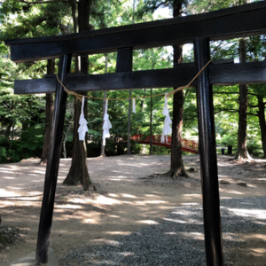

About Me

| 名前 | 𠮷澤 虎次郎 |
| ニックネーム | log K / lX57 |
| 生年月日 | 2002年7月16日 |
| 出身 | 東京都 |
| 所属 | 東京農工大学 工学府 知能情報システム工学専攻 金子研究室 |
| サークル | マイクロコンピュータクラブ(競技プログラミング部門) |
| 好きなこと | 競プロ / 音楽ゲーム / 神社巡り |
| エディタ | VSCode |
Brief History
-
2018/4
東京都立武蔵高等学校 入学
同校附属中学校を卒業し、そのまま入学しました。
部活動はパソコン部と吹奏楽部に所属しました。 -
2018/6
競技プログラミングに出会う
同級生の勧めで競技プログラミングを始めました。
当時は「log_K」として AtCoder 社のコンテストに出場していました。 -
2019/9
文化祭の電子パンフレットプロジェクトに参加
パソコン部の活動として、文化祭のパンフレットの電子版を作成・運用しました。
WordPress を用いた通知のシステムの実装、および当日の運用・管理を担当しました。 -
2019/11
パソコン甲子園2019 プログラミング部門本選に出場
チーム「らてｄ」として、地域枠で本選に出場しました。
当時の大会レポート(チーム番号 P16) -
2021/4
東京農工大学 工学部知能情報システム工学科 入学
受験勉強のため引退していた競技プログラミングに「lX57」として復帰しました。
部活動・サークルは弓道部とマイクロコンピュータクラブに所属しました。 -
2023/4
2023年度MCC競技プログラミング長 就任
※MCC…所属するサークル「マイクロコンピュータクラブ」の略称です。
-
2023/7
競技プログラミング関連のアルバイトを開始
中高生相手に競技プログラミングの基礎や有名なアルゴリズムなどを教えるアルバイトに参加するようになりました。
-
2023/9
東京農工大学MCCプログラミングコンテスト2023 開催
-
2023/11
The 2023 ICPC Asia Yokohama Regional 出場
チーム「sankaKsu」として、大学代表として出場しました。
-
2024/3
東京農工大学MCCプログラミングコンテスト2023Winter 開催
-
2024/4
2024年度MCC競技プログラミング長 就任
-
2024/9
TUATPC2024Summer 開催
-
2024/12
The 2024 ICPC Asia Yokohama Regional 進出
チーム「novvcovv」として、大学代表としてアジア地区予選に進出しました。
log K は体調不良で当日参加できませんでした…。 -
2025/3
TUATPC 2025 Spring 開催
競技プログラミングサイト「MOFE」にて「TUATPC 2025 Spring」を開催しました。
東京農工大学にてオンサイト会場を設け、問題準備や当日の運営を担当しました。 -
2025/3
東京農工大学 工学部知能情報システム工学科 卒業
-
2025/4
東京農工大学 工学府知能情報システム工学専攻 入学